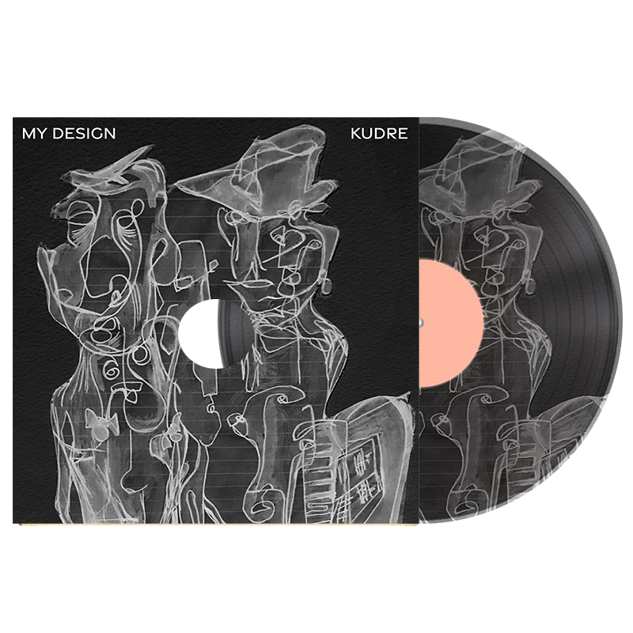
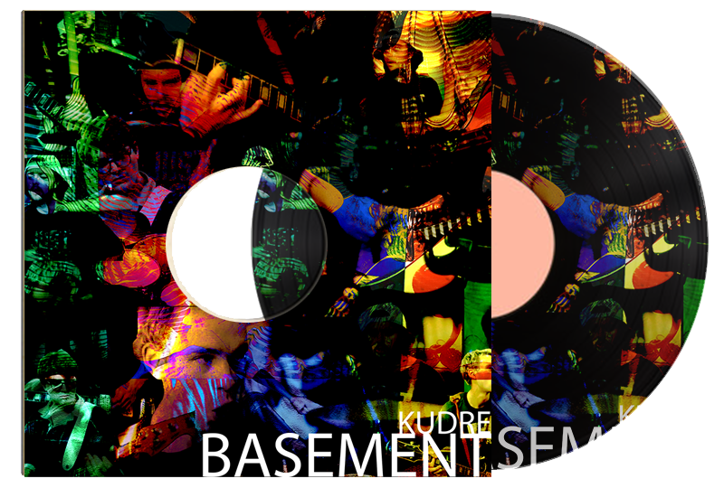
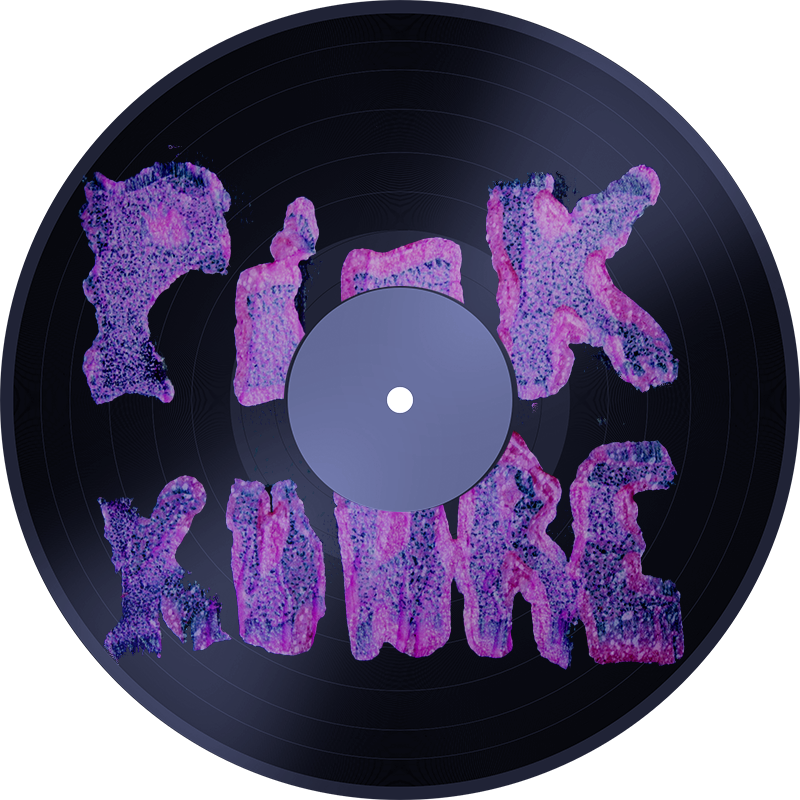

KUDRE
Kudre is a three-piece alt-rock band hailing from South East London. Our music delves into the raw and honest facets of life, drawing inspiration from a diverse range of influences. Known for our intense and visceral sound, we create music that resonates deeply with listeners, capturing the darker themes that often go unspoken. Explore our latest releases, upcoming shows, and more through the links provided. Join us on this musical journey and experience the unfiltered energy of Kudre.
Johnny No Mates Army (Police State)
Check out our latest single Johnny No Mates Army (Police State)

My Design
Kudre presents "a dynamic trend where technic and body blend together thanks to a good glue made of refined sounds well adapted to the musical context that embellish the listening. "My Design", lays the foundations on really spot on metrics and riffs. Ghost Record Label.
Sometimes all it takes is a catchy chorus to really hook you into a specific song and a band in general. That’s what hooked me at first when it comes to “My Design” from Kudre but, the more I listen to this song, the more I realize that this song is so much more than just it’s powerful chorus. Girl at the Rock shows.

Basement
"When we first started playing together as a band, Basement was always our final song in a live set. When we decided to record this song, we wanted to push that live sound. It's big, and it's raw! The classic Kudre way..."
PINK
Kudre’s latest single “Pink” reflects on the themes of mistakes and accountability. Hailing from Southeast London, Kudre channels influences like Nirvana and Red Hot Chili Peppers. The song opens with “I’ve got a rhythm/But the rhythm don’t play,” capturing the struggle of finding one's groove amidst life's challenges. With powerful vocals, energetic guitar, and dramatic bass, "Pink" is an anthem of frustration and resilience. Kudre aims to “bring meaning back into rock music,” delivering a raw, authentic experience reminiscent of live performances. Check out the full article here.
Play Me!

0:00 / 0:00
SHOWS
Shows TBC